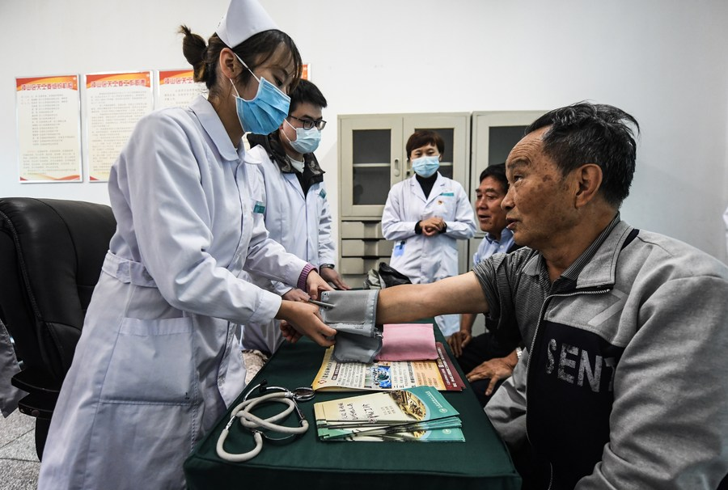
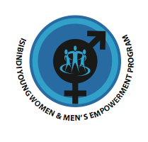
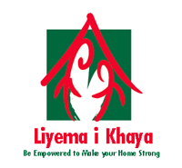
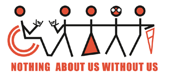
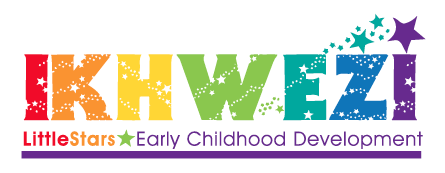

The NACCW provides a consultancy and mentoring service to child and youth care workers and institutions.
Skills development
The NACCW’s Training Department offers the Further Education and Training Certificate (FETC) in Child and Youth Care Work.
Professionalising the field
A journey of three decades, the quest for professional recognition and regulation of child and youth care workers has been driven largely by the NACCW.
Membership
Members participate in regional forums that meet on a regular basis to exchange knowledge and skills in the field of child and youth care work.
Developing and replicating models
The NACCW has developed an acclaimed, and increasingly replicated model of community-based child and youth care.
Knowledge development and dissemination
At Elder Care KBY, education is our primary motive where we are wholly committed to alleviating the illiteracy across the city with our educational campaigns and programme.
International Liason
Since its inception in 1975 the NACCW has been diligent in its pursuit of building strategic partnerships with individuals, groups and structures both nationally and internationally.
Advocacy
At regional level, members rally around issues of importance related to children’s wellbeing in their respective communities and provinces.
About Isibindi
Responding to the HIV/AIDS crisis as it has affected children, South Africa’s National Association of Child Care Workers (NACCW) has developed a community-based care and protection intervention option for children, named ‘Isibindi’ – ‘courage’ in IsiZulu. Articulating national policy in a ‘turnkey’ model, Isibindi projects are implemented by local organisations and communities, with the support of the social development authorities and donors, in the social service equivalent of a franchise. Linking community-based organisations with a national support network and information feed, Isibindi enables poorly resourced communities to adopt an evidence-based approach to the provision of integrated welfare services, and rapidly develop effective and informed local care and protection services for children.
Almost 300 Isibindi projects have been replicated across South African provinces, serving over 100 000 children who would otherwise have fallen outside of the care and protection matrix. Including quality assurance mechanisms, and a community development approach, the Isibindi model has received public acclaim, and is currently being scaled up through a South African government initiative. Additional components of the model include a Young Women’s Empowerment Program, a Young Men’s Empowerment Program, a non-centre based ECD model and a Disability model – all of which enable progressive realisation of a wide range of children’s rights and protection needs, through effective deployment of community-based child and youth care workers.
Child and youth care work is an emerging social service profession encompassing a body of research, theory and skill, pertaining to meeting the normal developmental needs of children and youth, as well as their deeper therapeutic needs. A defining aspect of child and youth care work is that it is practiced in the life-space of children, so that the physical context of the work is where children are at any moment – in their homes, in the community, in school, or in the street. The Isibindi model trains unemployed people selected by their communities in an accredited child and youth care training, employing them to support vulnerable children and families in their own communities – while creating jobs and setting workers on a career in a recognised discipline.
The core of the Isibindi model is the provision of child and youth care services to children and youth in their homes by the trained and supervised child and youth care workers (CYCWs). CYCWs connect with children and build relationships with them through the use of daily life events – they help the family with basic household chores and educate about general hygiene, gardening, health, nutrition, and household care. They cook together with children, teach basic life skills and build resilience – using ordinary human interaction as a context and a means for transcending basic care to meet the emotional needs of children – especially in child headed and parentless families. This higher level engagement is described by one child burdened with the care of three younger siblings in the words “... Auntie helped me dream my dreams again...”
The Isibindi Safe Park model provides a range of services in a community – a place for children to be – to play under the supervision of CYCWs, receive educational support, hear traditional stories and celebrate national calendar days. Currently being replicated in Zambia, the Isibindi model is adapted by grassroots implementers to suit local conditions and cultural contexts – within the framework of the overarching commitment to the realisation of children’s rights, and the building of a children’s workforce to give effect to such rights – even in the most remote and poorly resourced communities.
Helping with the preparation of meals
Cleaning the house with the children and caregivers
Accompanying family members to the clinic and overseeing the taking of medication
Assisting the family with application for birth certificates
Helping the family to budget
SAFEPARKS

The Concept
Children have a right to be children – to play and to dream. This is understood so universally that Article 31of the United Nations Convention on the Rights of the Child requires all ratifying countries to;
“Recognize the right of the child to rest and leisure,
Engage in play and recreational activities appropriate to the age of the child and …
Participate freely in cultural life and the arts”.
But in South Africa, the HIV/AIDS epidemic has forced many children to take on adult responsibilities. They care for dying parents, look after younger siblings, learn to cook and clean. Play – so vital for healthy child development – is compromised as children become parents to younger siblings. The Safe Park concept seeks to remedy this reality for children by providing them with the time and the place to play – within the protective circle of trained child and youth care workers.
Safe Park Model
The National Association of Child Care Workers has developed the Safe Park model currently being replicated across South Africa by over 20 organisations. Safe Parks provide exactly this – safe places for children to play where they have access to adult supervision and can play in peace and safety. Especially important for children heading households, the model is implemented by oganisations in a formal way where land is allocated by local authorities and equipment is in place. But the model is also implemented informally where and resources are scarce. The key ingredient for the success of the model is the nurturing and exciting presence of child and youth care workers! Children like to play where adults are! They also like to play with adults, and get involved in structured activities. The Safe Park model offers the possibility of wholesome fun in the context of desperate lives – an essential ingredient for overcoming hardship.
Programs and Activities Run in Safe Parks Include:
Sports clubs and organized sports and games which channel children’s energy into constructive group activities.
Reclaiming traditional cultural activities and practices including indigenous games, cultural dance and song – and storytelling by elders.
Homework supervision and tuition for groups or individual children.
Respite for children heading households as child and youth care workers care for the little ones.
Group and individual discussions on teenage pregnancy, substance abuse, and HIV/AIDS.
Toy libraries.
Life Center Programs where adolescents engage with societal issues affecting them, and build their strength and capacity to make positive choices in life.
Food security programs, including community food gardens where children learn gardening skills, as well as feeding schemes.
Holiday programs for engaging children throughout long school holidays.
Commemoration of public holidays.
Most importantly, the Safe Park is a place where the community embraces its members, countering the stigma that plagues children and families affected by the HIV/AIDS pandemic. A Safe Park is a wonderful place of healing, support, and belonging.
Isibindi Special Programs
Through experience the NACCW identified a number of areas which require additional programming. It developed, piloted, researched and rolled out a number of modular programmes that can be implemented as the need arises in a particular Isibindi project.

Young Men’s Empowerment Programme (YMEP)
First, young men are exposed to a week-long wilderness programme where they are taught life-skills and planned awareness-raising is done with regard to gender issues and manhood.
Second, these young men are supported by child and youth care workers who understand gender dynamics and politics.
Young Women’s Empowerment Programme (YWEP)
First, a group of women child and youth care workers from the particular Isibindi project is concientised to issues of gender politics and the impact of this on women's experiences in life. These child and youth care workers then mentor and support the young women on an on-going basis in their life space.
Second, a group of young women are exposed to a week-long residential program of intensive growth and strengthening, particularly with regard to women's issues. The young women are assisted with career planning and accessing further education and training.
Child Protection Programme
Children who had been sexually abused and who lives in rural and deep rural areas attend a short-term residential programme. Chidren thus affected are brought from all over a province to a central child and youth care centre during the school holidays.
A combination of intensive therapeutic life-space work and individual and group therapy is offered.
The model also includes family members who are able to continue to support the children. Where possible children are also linked to community support systems.

Liyema I Khaya
Young people (16 - 25) managing the burden of heading households as a result of the HIV/AIDS pandemic attend this programme.
It comprises a structured capacity-building programme at the Isibindi Safe Parks and takes approximately 12 - 18 months to complete, depending on the schedules of the youth.
The programme is structured into 6 themes comprising 24 sessions. The facilitator of the programme is a CYCW who has been trained in the ADP.
The aim is to help the young people reflect on their experiences, losses and traumas, learn coping and life skills. They are helped to understand how to transfer these skills to their siblings as they lean to take care of their siblings physically, emotionally, cognitively and spiritually.

Disability
This programme aims to ensure that the needs of children with disabilities are addressed in Isibindi projects in the following ways:
facilitating access to grants
gaining access to schools
providing appropriate physical and psychosocial care and support
participating in recreational and cultural activities
Early Childhood Development

Early Childhood Development (ECD)
This programme trains child and youth care workers in basic ECD skills. They are sent to families with children under the age of 6 to do:
structured play with the children
1 ½ hour sessions twice a week, or more if necessary
assess the children’s development and adapt toys and play opportunities accordingly during follow up sessions
Caregivers are also encouraged to engage in these sessions
Ways in which to help children develop whilst doing everyday tasks are discussed and modelled by the child and youth care worker whilst at the home
Regular workshops are run for caregivers/gogos where issues of importance are discussed, and information exchanged. Whilst the caregivers are busy with this, the children are engaged in group ECD activities. After, or before the workshops the caregivers are encouraged to play with the children, together with the child and youth care workers. In this way games and ways of interacting is transferred and practiced.
Integrated Youth Development Programme (IYDP)
The programme aim is to support the holistic development of vulnerable teenagers/youth (16 to 25) through the provision of a comprehensive package of life skills, educational and economic empowerment opportunities.
The expected outcome is to create sustainable change in the lives of young people which will see them successfully 'launched' into adulthood with the ability to serve as responsible role-models to their siblings and peers, contribute meaningfully to their communities and ultimately support themselves financially.